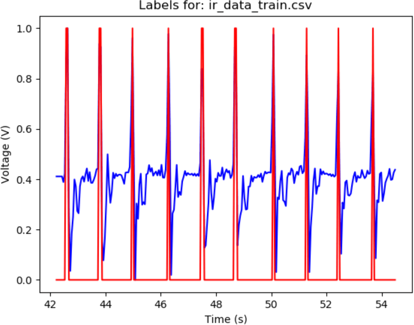
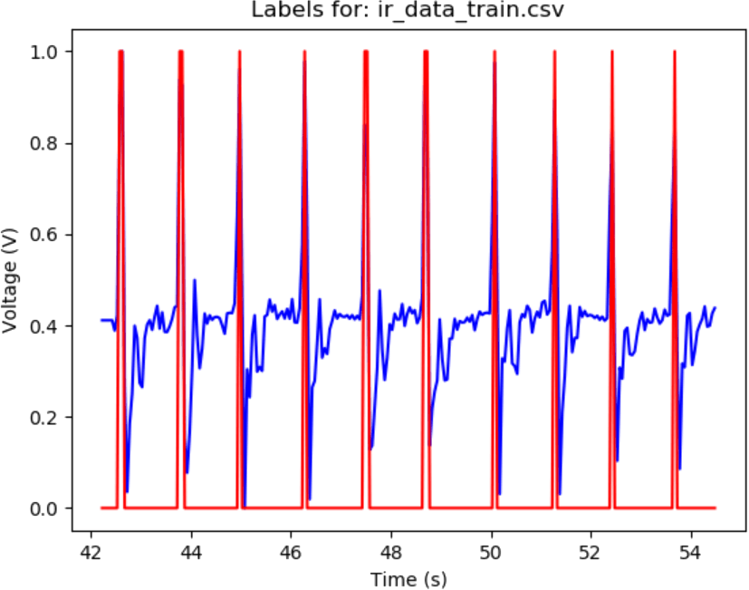
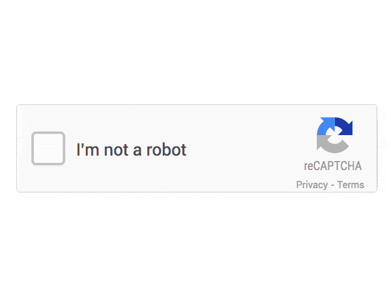
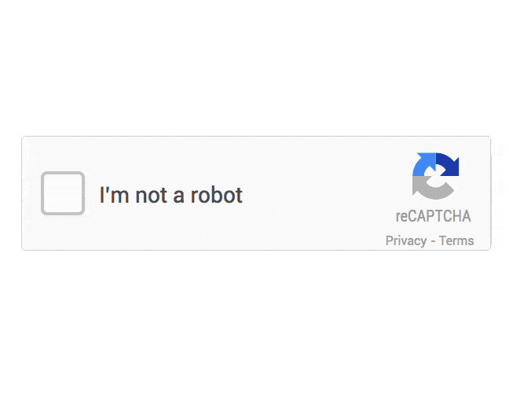
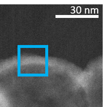
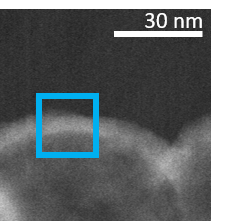
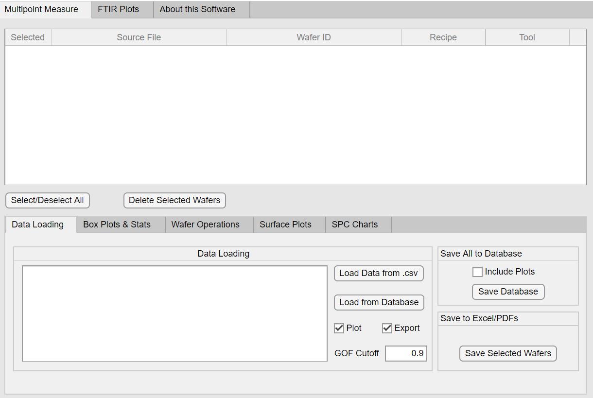
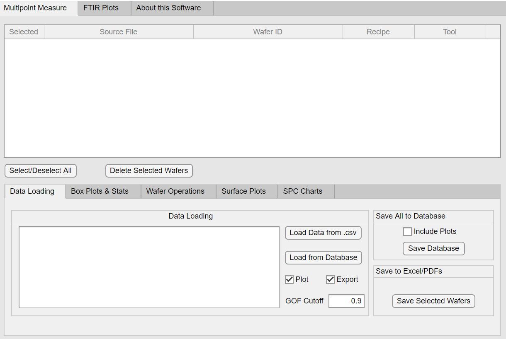

Code
My bread and butter is Python, but I am an energetic learner and easily pick up new things.
I like to work fast but always keep the minimum viable product in mind in order to deliver a working system.
I particularly enjoy thinking abstractly and putting together large systems with many moving parts.
Visit My Github
Mat Sci
The invisible, crazy world of nanomaterials is something that has always fascinated me. For 4 years, I’ve studied applications of nanomaterials for advanced oncology treatment.
Last year, I took a break from nanomaterials to try semiconductors at Applied Materials. There I created scripts and GUIs for automated wafer map analysis, including smart statistical analysis.
My Publications
Personal
I enjoy improving every day things. I don't take any design for granted and always have an opinon on how improvements can be made.
I like playing soccer on the weekends and biking. I enjoy the little things in life.

 

 



 

 
